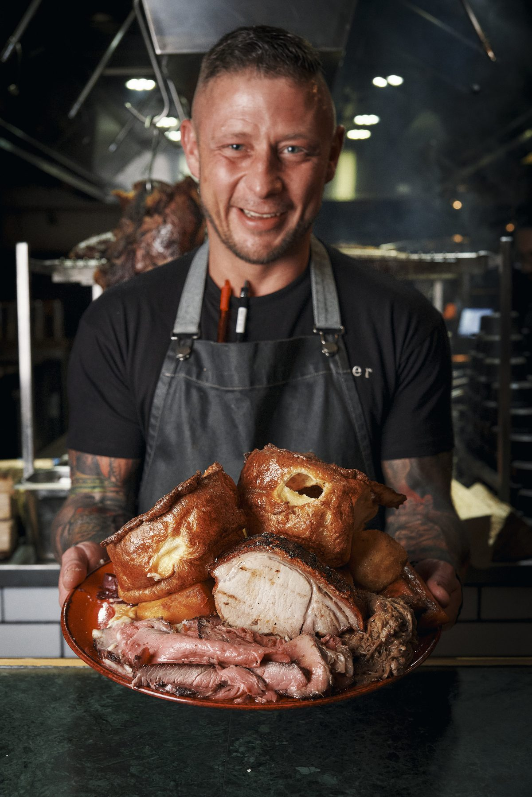

Open-fire steakhouse · Soho & the City · since 2016
Meat.
Fire.
Tacos.
Rare-breed beef from one farmer. Butchered in the room. Cooked over wood and charcoal, no gas, in front of you.
Rare-breed beef from one farmer. Butchered in the room. Cooked over wood and charcoal, no gas, in front of you.

Time Out's best roast in London · Soho · Sundays from noon · from £29.90
Beef, pork, chicken or lamb at £29.90. The Three Beast Feast for two at £38.50. Or make it bottomless for £55. Beef-fat potatoes, a giant Yorkshire and a gravy that takes sixteen hours come with all of them.

Sells out by FridayFull menus with prices for Soho and City. This is the short version.

Charles Ashbridge, North Yorkshire, since 2016. We buy the whole beast, butcher it in-house and dry-age every cut. In other words, it's all f##ing delicious.
Steak and chips, a triple smashed cheeseburger or the temper Benedict, two tacos, and ninety minutes of free-flowing drinks. From £45. OpenTable Top 100 Brunch 2026.


Taco Tuesday · £9.50 tacos, £9.50 margaritas · from 5pm · Soho & City
Twenty behind the curtain in Soho. Fifty on the City mezzanine with its own bar. Or the whole of either room, up to 240.
Private hire→
Confirmed in seconds. Free to cancel. Up to eight online, nine or more through the events team.
9+ · Soho · City · Bar-B-Q & Crabshack · Opening list